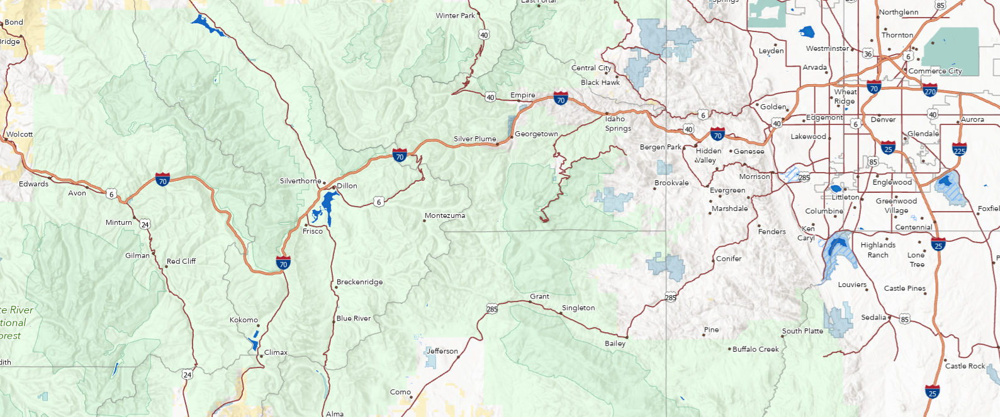
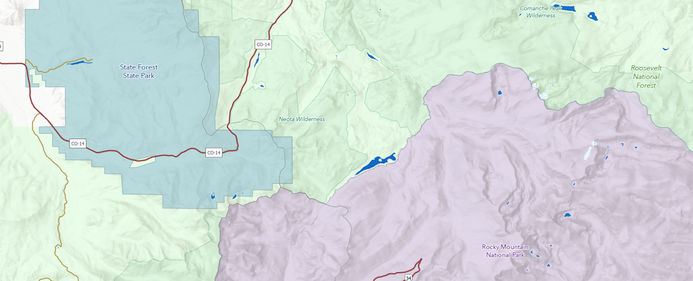

Cartographic Portfolio
Below you will find examples of my cartographic work that I have created throughout my work experience and for fun. Click on the image of a map to view it in a new tab.
Statewide Basemap
During my postion at OIT, I created a custom basemap specific to the
State of Colorado. The goal was to provide a customized
basemap highlighting important reference layers around Colorado. The
basemap is free to use, and instuctions can be found in the
Colorado Statewide Basemap User Guide.
I symbolized the layers, set the labeling and visibility extents, and ensured that the
basemap provided a comprehensive cartographic reference for the state.


Documented Arborglyphs in Routt County, Colorado (1927-Present)

Approximate Locations of Arborglyphs, Routt County, CO

Western Colorado and Surrounding Region: Present Day

Historical Colorado County Boundaries and Railway Corridor

Emerald Mountain Trail System
I created this map as a gift for a friend illustrating their favorite trails on Emerald Mountain in Steamboat Springs, Colorado.